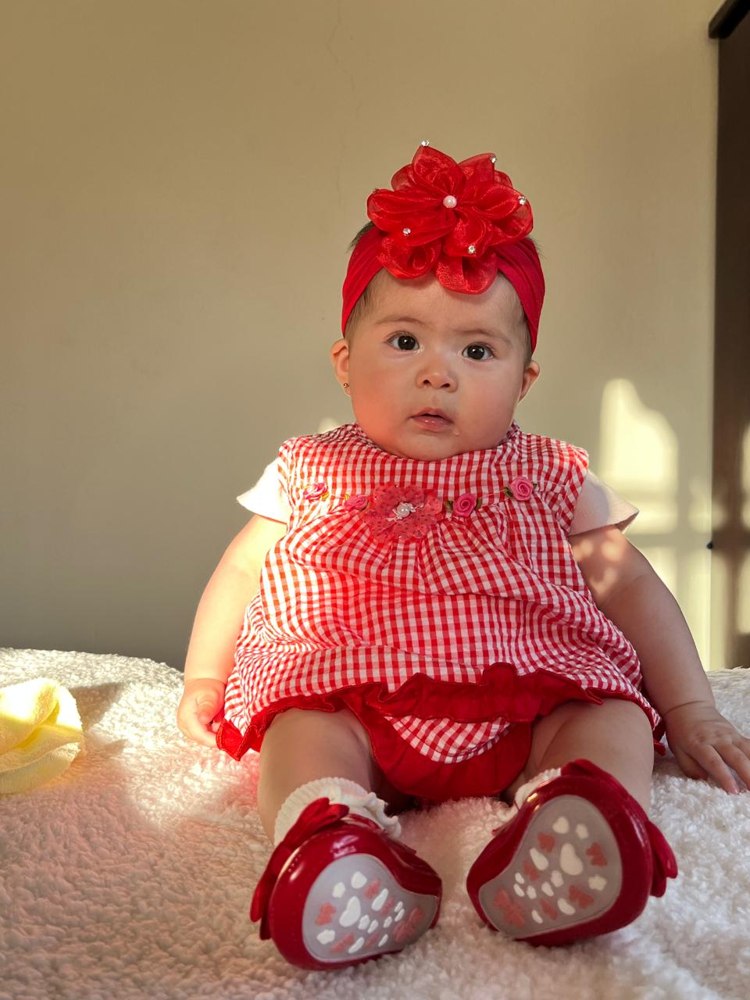
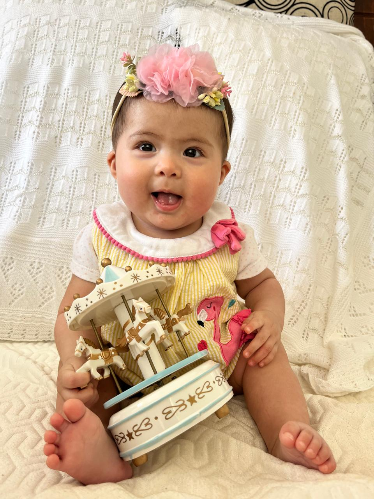
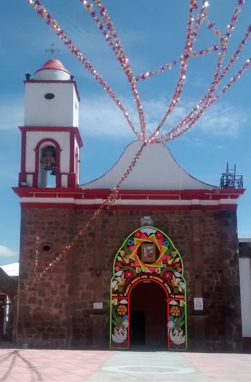
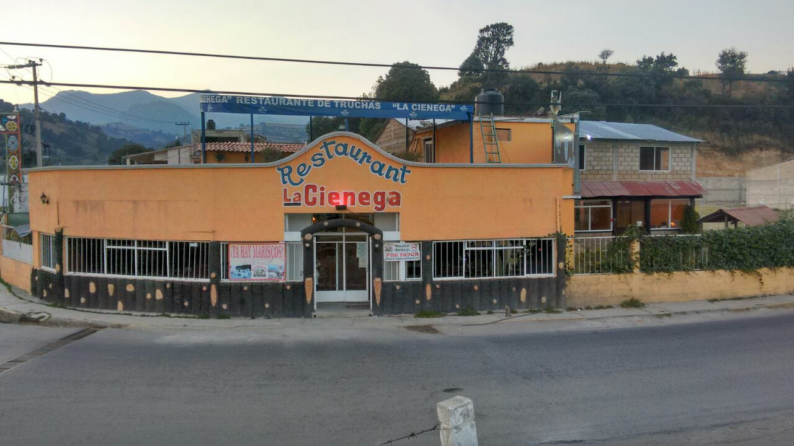
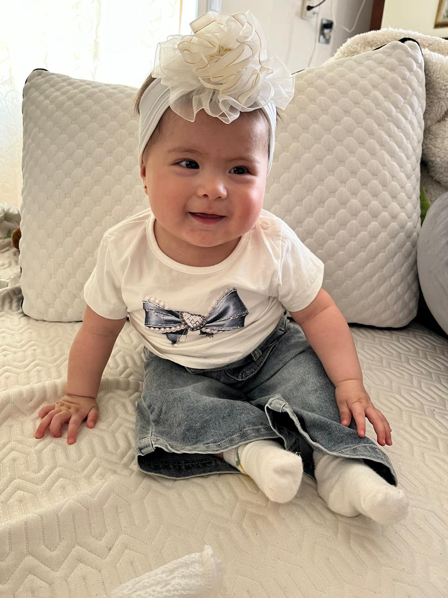
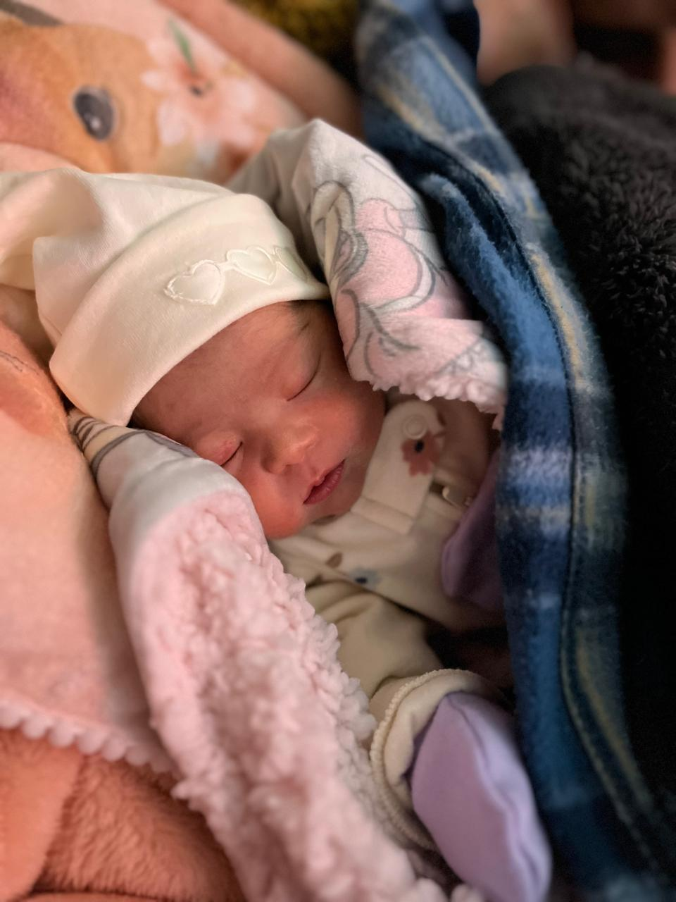
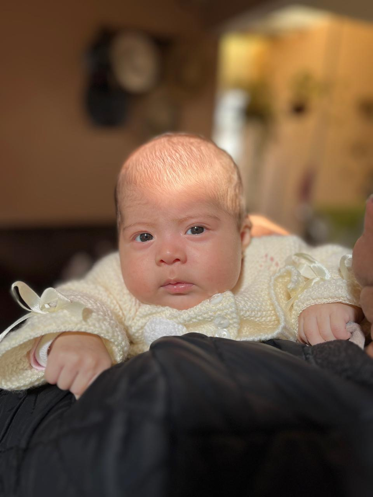
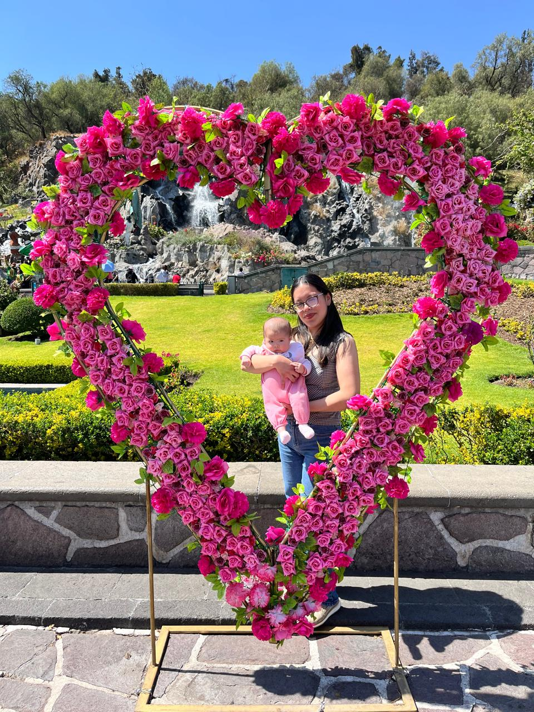

“Hija querida hoy te confiamos a Dios, para que su luz se encienda en tu corazón e ilumine todo el camino de tu vida.”

Elisa María Reyes Ramírez
Alam Monroy Martínez
Isis Yadira Reyes Trujillo

Parroquia San Miguel Arcángel
11:00 a.m.

Restaurante de truchas “La Cienega”
3:00 p.m.



